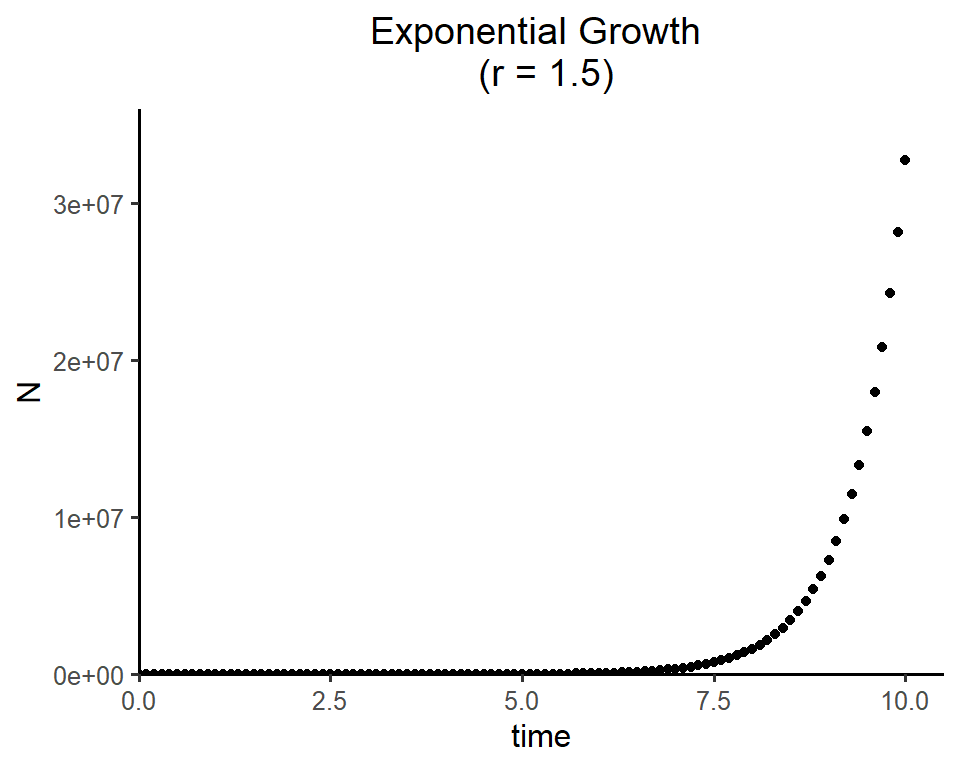
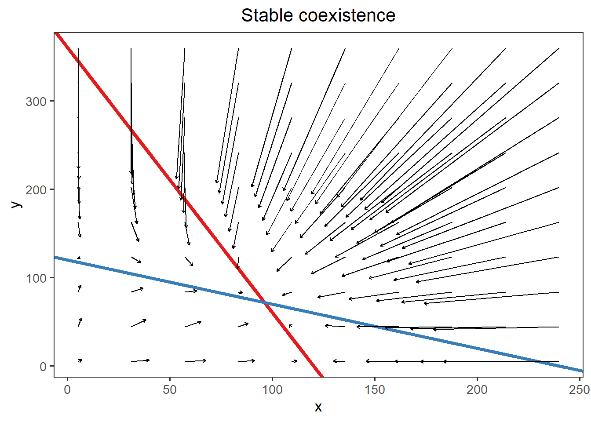

Week 2
Exponential population growth
In part 1, we will solve the differential equation for exponential population growth and visualize how the population sizes change over time.
Part 1 - Numerical solution using the package “deSolve”
Two main phases:
Model specification: specify the structure of differential equation model
Model application: set the time steps, initial population size and model parameters (e.g., intrinsic population growth rate r), and then solve the equation model
# install.packages("deSolve")
library(deSolve)
### (1) Model specification
exponential_model <- function(times, state, parms) {
with(as.list(c(state, parms)), {
dN_dt = r*N # exponential growth equation
return(list(c(dN_dt))) # return the results
})
}
### (2) Model application
times <- seq(0, 10, by = 0.1) # time steps to integrate over
state <- c(N = 10) # initial population size
parms <- c(r = 1.5) # intrinsic growth rate
# run the ode solver
pop_size <- ode(func = exponential_model, times = times, y = state, parms = parms)
# take a look at the results
head(pop_size)## time N
## [1,] 0.0 10.00000
## [2,] 0.1 11.61834
## [3,] 0.2 13.49860
## [4,] 0.3 15.68313
## [5,] 0.4 18.22120
## [6,] 0.5 21.17002Part 2. Visualize the integration results:
Linear scale
# install.packages("tidyverse")
library(tidyverse)
ggplot(data = as.data.frame(pop_size), aes(x = time, y = N)) +
geom_point() +
labs(title = paste0("Exponential Growth \n (r = ", parms["r"], ")")) +
theme_classic(base_size = 12) +
theme(plot.title = element_text(hjust = 0.5)) +
scale_x_continuous(limits = c(0, 10.5), expand = c(0, 0)) +
scale_y_continuous(limits = c(0, max(as.data.frame(pop_size)$N)*1.1), expand = c(0, 0))
Log scale
ggplot(data = as.data.frame(pop_size), aes(x = time, y = N)) +
geom_point() +
labs(title = paste0("Exponential Growth \n (r = ", parms["r"], ")")) +
theme_classic(base_size = 12) +
theme(plot.title = element_text(hjust = 0.5)) +
scale_x_continuous(limits = c(0, 10.5), expand = c(0, 0)) +
scale_y_log10(breaks = scales::trans_breaks("log10", function(x) 10^x)(c(10, 10^7)),
labels = scales::trans_format("log10", scales::math_format(10^.x)),
expand = c(0, 0))